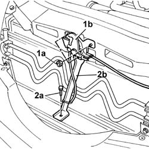
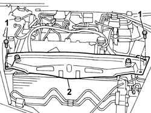
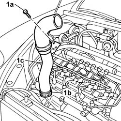
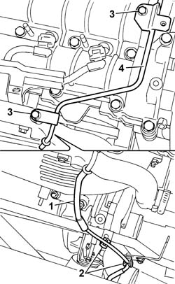
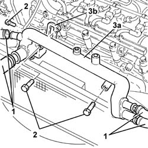

1088D24 RIGID PIPE for coolant inlet to water pump - R&R
- Path
- Procedures > 10 ENGINE > 1088 ENGINE COOLING > 1088D COOLANT HOSES AND PIPES > 1088D24 RIGID PIPE for coolant inlet to water pump - R&R
- Kind
- repair procedure (removal / refitting; the operation number is the code)
- Applies to
- engines: 2.4 JTD 20V; all production periods
- Interactive page
- https://sloeber94.github.io/elrnDB-lThss/en/#/851003
Applies to: engines: 2.4 JTD 20V; all production periods
 Removing
Removing
 Refitting
RefittingSee in Op. 7040D50 ENGINE COMPARTMENT UPPER SOUND INSULATION SHIELD - R.R.
See in Op. 1016A10 SOUND-PROOFING COVER - R.R.
See in Op. 1048B44 RIGID air supply PIPE from heat exchanger to intake manifold - R.R.
See in Op. 7055B54 PROTECTION/GUARD under engine - R.R.
- Have a suitable container for collecting the coolant ready.
- Disconnect the lower radiator pipe and drain the engine coolant into the container underneath.
1. Undo the fixing nuts (1a) and remove the bonnet lock (1b) from the housing in the crossmember.
2. Undo the lower nut (2a) and remove the lock reinforcement bracket (2b).

Applies to: engines: 2.4 JTD 20V; all production periods
1. Undo the retaining bolts.
2. Remove the upper front crossmember.

Applies to: engines: 2.4 JTD 20V; all production periods
1. Undo the bolt fixing the rigid section of the air/air heat exchanger inlet pipe.
2. Disconnect the band (2a) and remove the rigid intermediate air supply pipe (2b) from the heat exchanger.

Applies to: engines: 2.4 JTD 20V; all production periods
1. Disconnect the flexible section of the vacuum pipe from the rigid section.
2. Release the flexible section from the mounting bands.
3. Undo the retaining bolts.
4. Release the rigid section of the vacuum pipe from the vacuum reservoir and move it away from the work area.

Applies to: engines: 2.4 JTD 20V; all production periods
1. Disconnect the engine coolant pipes connected to the pump rigid water inlet pipe.
2. Undo the bolts securing the pump water inlet pipe.
3. Remove the rigid pump water inlet pipe (3a) and keep the gasket (3b) underneath.

Applies to: engines: 2.4 JTD 20V; all production periods
Refitting
Removing- Fit the rigid pipe in the housing on the cylinder head.
- Tighten the bolts fixing the rigid pipe to the cylinder head to torque.
 | Value - daNm | Fastening | Component | Ø |
|---|---|---|---|---|
. | (Cylinder head) 0.9 | Bolt | COOLANT PUMP RIGID INLET PIPE | M6 |
- Connect the engine coolant pipes to the rigid pipe.
- Place the rigid section of the vacuum reservoir vacuum pipe in position and tighten the fixing bolts.
- Connect the flexible pipe to the rigid section of pipe and secure the flexible part to the mounting bands.
- Connect the rigid intermediate pipe to the heat exchanger hose.
- Tighten the bolt fixing the rigid air supply pipe to the water pump rigid inlet pipe.
- Fit the upper front crossmember and tighten the fixing bolts to torque.
| Value - daNm | Fastening | Component | Ø |
|---|---|---|---|---|
. | 0.6 | Bolts | FRONT WING CROSSMEMBER HEADLAMP HOUSINGS | M6 |
- Fit the bonnet lid lock complete with bracket and tighten the nuts fixing it to the upper crossmember and to the lower crossmember.
See in Op. 1048B44 RIGID air supply PIPE from heat exchanger to intake manifold - R.R.
See in Op. 0010T20 Engine REFRIGERANT FLUID - Change
See in Op. 1016A10 SOUND-PROOFING COVER - R.R.
See in Op. 7040D50 ENGINE COMPARTMENT UPPER SOUND INSULATION SHIELD - R.R.